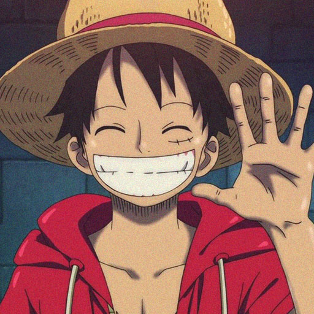

Join the Straw Hats Today
Welcome to the Straw Hat Pirates, the crew consits many members including Luffy The captain of the Straw Hats, Luffy's right hand man and first crewmate Zoro the swordsman of the ship, then there is Nami The second crewmember to join the navigator of the crew, Third to join is Usopp the marksman of the crew, fourth to join the pervy chef Sanji using his powerful kicks to fight and uses his hands in the kitchen, fifth is the lovable Chopper who is the doctor, then there is Nico Robbin The Archeologist, Franky the cyborg and shipwright of the crew and craftsmen of the Sunny (the ship they use), out of nowhere Brook joins the crew as the muscician, and lastly Jinbe the latest member to join the crew and takes on the roll of being the helmsmen of the Sunny.